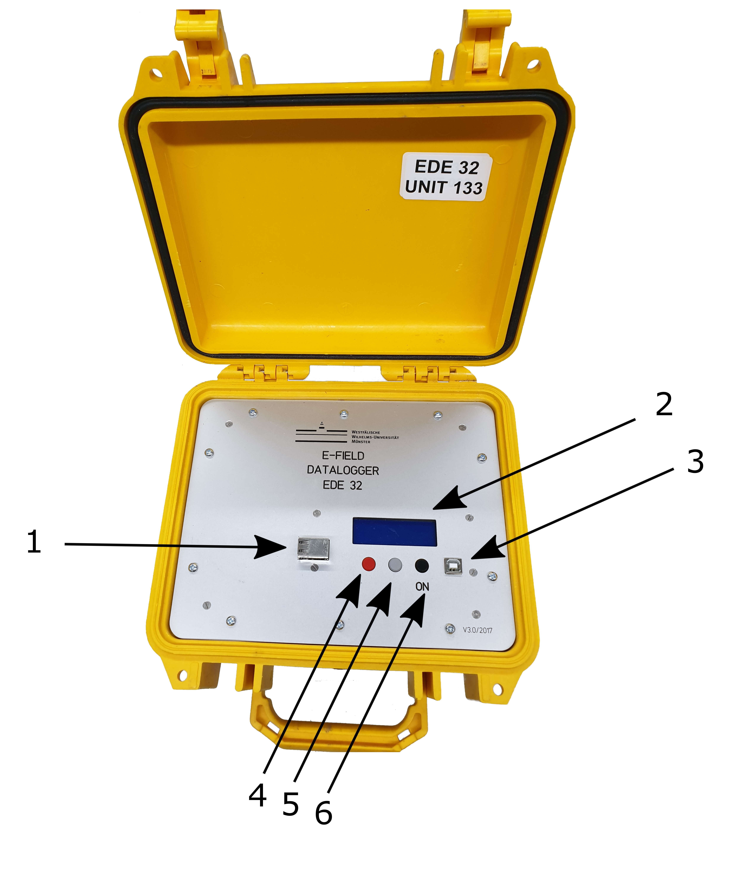

Overview¶
Top view¶

Top view of EDE¶
USB type A socket for SSD
LCD display
USB type B socket for developing purposes only
Left arrow/shut down button
Ok button
Right arrow/power on button
Right side¶
Right side view of EDE¶
North E-field connector
South E-field connector
East E-field connector
West E-field connector
Ground socket
GPS socket